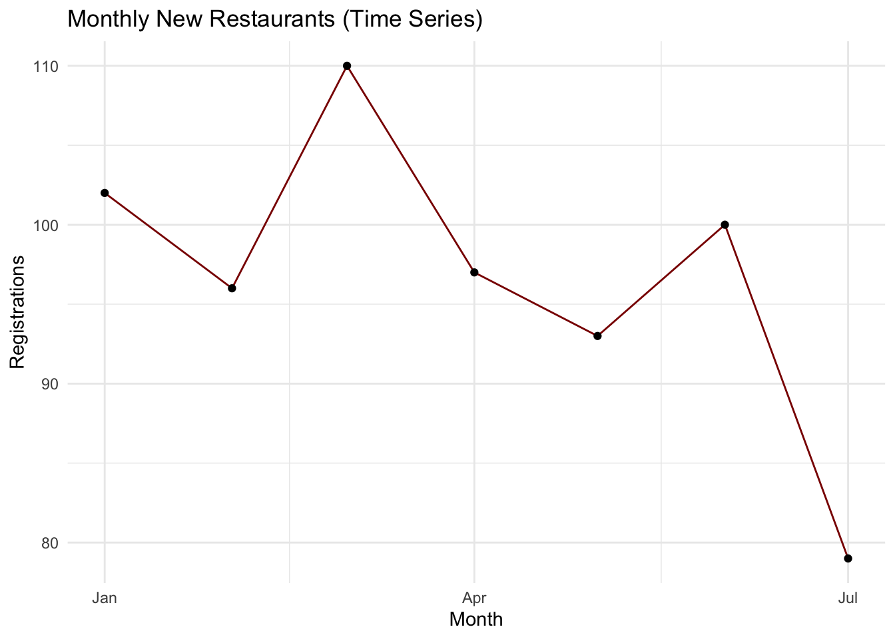
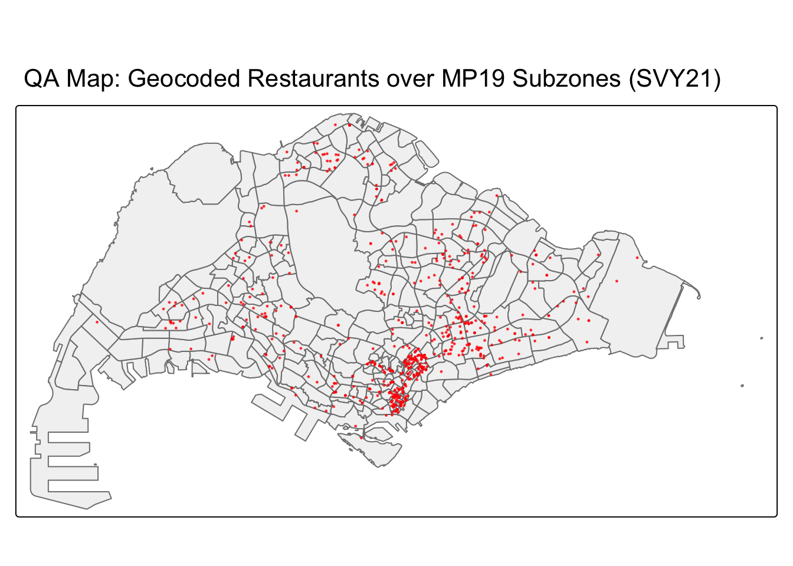
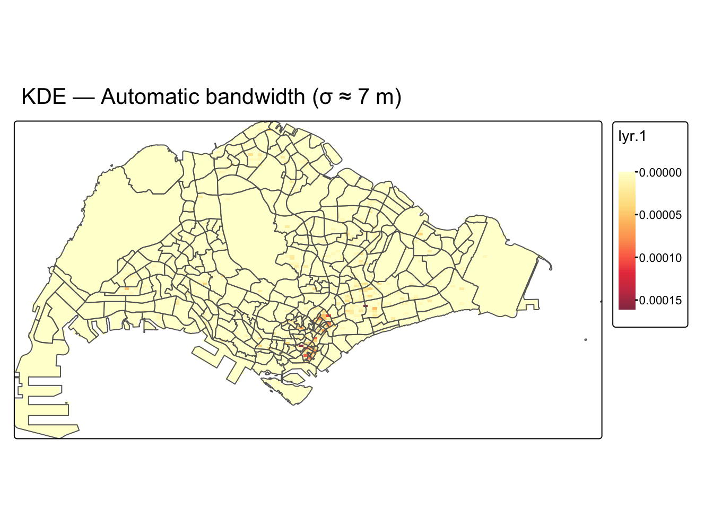
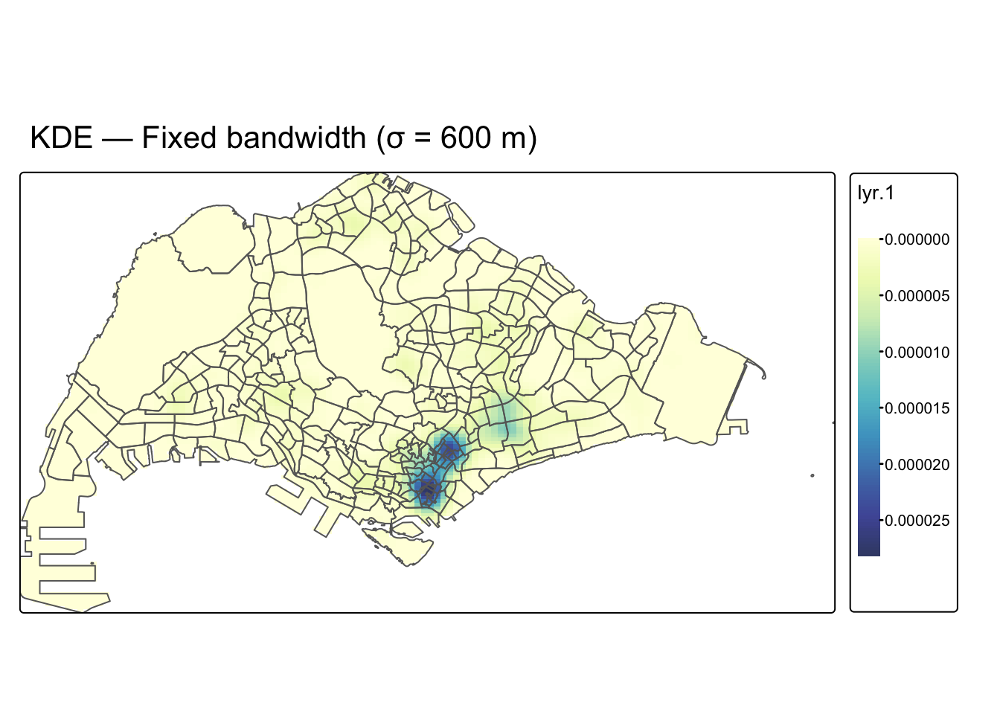
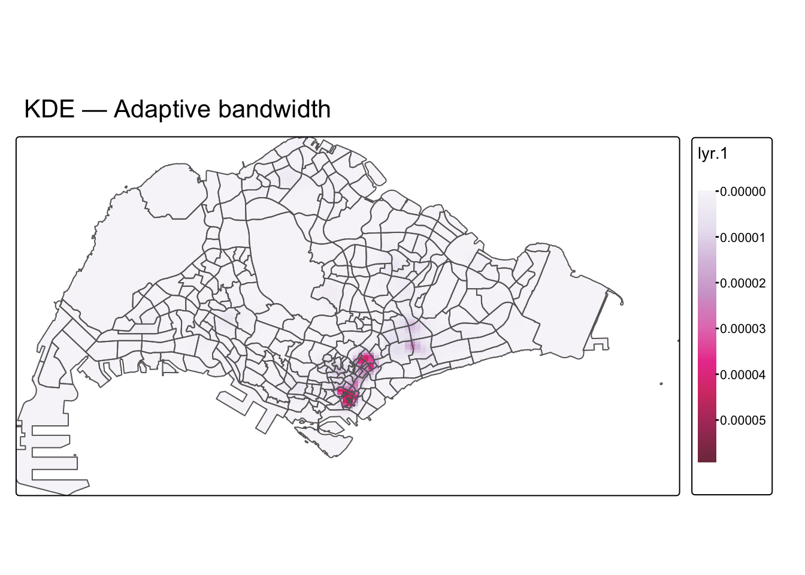

if (!require(pacman)) install.packages("pacman") # install pacman once if missing
pacman::p_load( # load (and auto-install if needed)
tidyverse, # data wrangling + plotting (dplyr, tidyr, ggplot2, readr)
stringr, # string helpers (e.g., str_pad, str_detect)
lubridate, # date helpers (e.g., year, month, floor_date)
sf, # vector geospatial (points/polygons, CRS transforms)
tmap, # cartographic maps (static/interactive)
terra, # raster/SpatRaster conversion for KDE images
rvest,
httr, # HTTP client for OneMap geocoding calls
spatstat, # point pattern analysis meta-package (ppp, Kest, Lest, envelope, density)
here # robust relative file paths for reproducibility
)Take-home Ex01: Geospatial Analytics for Public Good
1 Overview
Restaurants are a sensitive barometer of urban vitality: they arise where pedestrian flows, accessibility, and complementary land uses intersect, and they seed further activity via agglomeration effects. This study interrogates the first-order (intensity) and second-order (interaction) properties of new restaurant registrations in Singapore between 1 Jan 2025 and 30 Jun 2025. Following the exact workflow taught in In-Class Exercise and the Hands-on series, we (i) tidy ACRA registrations, (ii) geocode 6-digit postcodes using OneMap’s, (iii) project to SVY21 (EPSG:3414) for distance-true analysis, (iv) estimate kernel density (fixed and adaptive bandwidths) to reveal where intensity concentrates, and (v) evaluate Ripley’s L/K with CSR envelopes to determine statistically significant clustering scales. Results are interpreted for planning and management (town-centre provisioning, licensing cadence, last-mile logistics, and transit-oriented support).
2 The Data
We use ACRA Information on Corporate Entities CSVs from data.gov.sg (27 alphabetically split files). Each record includes identifiers (UEN), names, registration dates, postal codes, and SSIC classifications. Following the in-class geocoding exercise, we tidy these tables, filter to the assignment window (2025-01-01 to 2025-06-30), and select SSIC 56111 (Restaurants and Cafés). We geocode using SLA OneMap’s: we loop through unique postcodes, request coordinates, collect results in a found table, and left_join them back to ACRA by matching postal_code with OneMap’s POSTAL. We then convert to sf with SVY21 coordinates (X, Y) for metric work. For context and windowing, we import Master Plan 2019 Subzone (No Sea) polygons, remove Z/M dimensions, and project to SVY21.
3 Research Quetions
Aligned with given exercise objectives (“identify where/when new firms appear; detect clustering; discuss implications”), our questions translate the class’s statistical toolkit into targeted, decision-relevant tests for restaurants. We intentionally separate first-order (where intensity is high) from second-order (how points interact relative to CSR), and we include a minimal spatio-temporal view (monthly facets) exactly as demonstrated in class.
RQ1 — Where/When: Where do new restaurants (SSIC 56111) concentrate spatially within January 2025 – Jun 2025, and how do these concentrations evolve month-to-month?
RQ2 — First-order intensity (Core): What is the intensity structure of new restaurants and which locales exhibit persistent high density after smoothing?
RQ3 — Second-order clustering scales: At which distance bands (e.g., 0–1000 m) do restaurants exhibit significant clustering or dispersion relative to CSR?
RQ4 — Planning/Management Implications: How should statistically validated hotspots and clustering scales inform town-centre planning, licensing cadence, amenity siting, and last-mile/logistics near identified corridors and nodes?
4 Setup (packages, folders, parameters) the environment
4.1 Load/install packages
4.2 Reproducibility for CSR envelopes
set.seed(626) # reproducibility for CSR envelopes4.3 Create a clean project structure (idempotent: no error if already exists)
dir.create(here::here("Take-home_Ex01/data/aspatial"), recursive = TRUE, showWarnings = FALSE) # ACRA CSVs go here
dir.create(here::here("Take-home_Ex01/data/geospatial"), recursive = TRUE, showWarnings = FALSE) # MP19 KML goes here
dir.create(here::here("Take-home_Ex01/data/rds"), recursive = TRUE, showWarnings = FALSE) # RDS caches go here
dir.create(here::here("Take-home_Ex01/outputs/figs"), recursive = TRUE, showWarnings = FALSE) # figures exported here
dir.create(here::here("Take-home_Ex01/outputs/tables"), recursive = TRUE, showWarnings = FALSE) # tables exported here5 Import & tidy ACRA (Restaurants only)
In this section, we import the Accounting and Corporate Regulatory Authority (ACRA) corporate entities data, which is organised into multiple CSV files. The objective is to compile, clean, and filter these records to isolate restaurants and cafés coded under SSIC 56111. This step is fundamental because it converts raw administrative files into a consistent and analysis-ready dataset, with standardised variable names, parsed dates, and validated postal codes. The outcome is a tidy dataset that preserves the essential business attributes required for downstream geocoding, spatial conversion, and statistical analysis.
5.1 Importing ACRA data
# folder_path points to the directory containing the ACRA CSV files.
folder_path <- "/Users/cktan/Desktop/SMU/01_Geospatial Analytics (ISSS626)/Hands-on_Ex/Take-home_Ex01/data/aspatial"
# list.files() collects all ACRA files that match the naming pattern and returns their full paths.
file_list <- list.files(path = folder_path,
pattern = "^ACRA*.*\\.csv$",
full.names = TRUE)
# map_dfr() reads each CSV file and stacks them into one tibble (row binding).
acra_data <- file_list %>%
map_dfr(read_csv)5.2 Saving ACRA data for reproducibility
# Save the raw imported data as an RDS file to avoid repeated imports in future runs.
write_rds(acra_data,
"/Users/cktan/Desktop/SMU/01_Geospatial Analytics (ISSS626)/Hands-on_Ex/Take-home_Ex01/data/rds/acra_data.rds")5.3 Tidying ACRA data (restaurants only, SSIC 56111)
biz_56111 <- acra_data %>%
select(1:24) %>% # Select only the first 24 columns (ignore extra metadata columns).
filter(primary_ssic_code == 56111) %>% # Keep only businesses coded as restaurants and cafés (SSIC 56111).
rename(date = registration_incorporation_date) %>% # Rename registration date field to a shorter label 'date'.
# Convert registration date to Date class, extract Year and Month (numeric and abbreviated).
mutate(date = as.Date(date),
YEAR = year(date),
MONTH_NUM = month(date),
MONTH_ABBR = month(date,
label = TRUE,
abbr = TRUE)) %>%
# Standardise postal code to six digits with leading zeros.
mutate(
postal_code = str_pad(postal_code,
width = 6, side = "left", pad = "0")) %>%
filter(YEAR == 2025) 5.4 Saving tidy restaurant data
# Save the tidy restaurant dataset for subsequent steps such as geocoding and EDA.
write_rds(biz_56111,
"/Users/cktan/Desktop/SMU/01_Geospatial Analytics (ISSS626)/Hands-on_Ex/Take-home_Ex01/data/rds/restaurants_56111_tidy.rds")6 Exploratory Data Analysis (EDA) of Restaurants
Before any spatial conversion or modelling, it is essential to perform exploratory data analysis (EDA) to understand the characteristics of the cleaned dataset. EDA helps confirm that the data aligns with the research window (January 2025 – Jun 2025) and that restaurants are being correctly filtered. It also allows us to observe temporal dynamics such as monthly registration counts and possible seasonal patterns. Through simple summaries, tables, and visualisations, we can validate the dataset’s integrity and gain initial insights into how new restaurants are distributed over time. This diagnostic step ensures confidence in the subsequent geocoding and spatial analyses.
6.1 Inspect data structure
# glimpse() provides an overview of column names, data types, and a sample of values.
glimpse(biz_56111)Rows: 677
Columns: 27
$ uen <chr> "202501136C", "202501329K", "2025029…
$ issuance_agency_id <chr> "ACRA", "ACRA", "ACRA", "ACRA", "ACR…
$ entity_name <chr> "AL ASHIK PTE. LTD.", "ARASH LEGACY …
$ entity_type_description <chr> "Local Company", "Local Company", "L…
$ business_constitution_description <chr> "na", "na", "na", "na", "na", "na", …
$ company_type_description <chr> "Exempt Private Company Limited by S…
$ paf_constitution_description <chr> "na", "na", "na", "na", "na", "na", …
$ entity_status_description <chr> "Live Company", "Live Company", "Liv…
$ date <date> 2025-01-08, 2025-01-09, 2025-01-19,…
$ uen_issue_date <date> 2025-01-08, 2025-01-09, 2025-01-19,…
$ address_type <chr> "LOCAL", "LOCAL", "LOCAL", "LOCAL", …
$ block <chr> "305D", "21", "324", "502", "15", "2…
$ street_name <chr> "ANCHORVALE LINK", "TAN QUEE LAN STR…
$ level_no <chr> "11", "02", "na", "02", "10", "na", …
$ unit_no <chr> "23", "04", "na", "02", "32", "na", …
$ building_name <chr> "ANCHORVALE PLACE", "HERITAGE PLACE"…
$ postal_code <chr> "544305", "188108", "338822", "46902…
$ other_address_line1 <chr> "na", "na", "na", "na", "na", "na", …
$ other_address_line2 <chr> "na", "na", "na", "na", "na", "na", …
$ account_due_date <chr> "2026-08-31", "2026-07-31", "2026-07…
$ annual_return_date <chr> "na", "na", "na", "na", "na", "na", …
$ primary_ssic_code <dbl> 56111, 56111, 56111, 56111, 56111, 5…
$ primary_ssic_description <chr> "na", "na", "na", "na", "na", "na", …
$ primary_user_described_activity <chr> "na", "na", "na", "na", "na", "na", …
$ YEAR <dbl> 2025, 2025, 2025, 2025, 2025, 2025, …
$ MONTH_NUM <dbl> 1, 1, 1, 1, 1, 1, 2, 2, 2, 2, 2, 2, …
$ MONTH_ABBR <ord> Jan, Jan, Jan, Jan, Jan, Jan, Feb, F…# Display the first five rows to manually confirm tidied field names and values.
head(biz_56111, 5)# A tibble: 5 × 27
uen issuance_agency_id entity_name entity_type_descript…¹
<chr> <chr> <chr> <chr>
1 202501136C ACRA AL ASHIK PTE. LTD. Local Company
2 202501329K ACRA ARASH LEGACY PTE. LTD. Local Company
3 202502902M ACRA ADAM'S FAMILY CATERING P… Local Company
4 202503682G ACRA ASWINS VEG RESTAURANT PT… Local Company
5 202504143K ACRA ADIRAI KR BRIYANI PTE. L… Local Company
# ℹ abbreviated name: ¹entity_type_description
# ℹ 23 more variables: business_constitution_description <chr>,
# company_type_description <chr>, paf_constitution_description <chr>,
# entity_status_description <chr>, date <date>, uen_issue_date <date>,
# address_type <chr>, block <chr>, street_name <chr>, level_no <chr>,
# unit_no <chr>, building_name <chr>, postal_code <chr>,
# other_address_line1 <chr>, other_address_line2 <chr>, …6.2 Count restaurants by year
biz_56111 %>%
count(YEAR, name = "n_restaurants")# A tibble: 1 × 2
YEAR n_restaurants
<dbl> <int>
1 2025 677# Summarise how many restaurants were registered in each year within the study period.6.3 Monthly registration counts (bar chart)
# Create a bar chart showing the distribution of new restaurant registrations by month.
p_month_bar <- ggplot(biz_56111, aes(x = MONTH_ABBR)) +
geom_bar(fill = "steelblue") +
labs(title = "New Restaurants by Month (Jan 2024 – Jun 2025)",
x = "Month", y = "Registrations") +
theme_minimal()
p_month_bar
6.4 Time series of monthly registrations
# Create a line chart to visualise the trend of new restaurant registrations over time.
p_month_line <- biz_56111 %>%
count(month = floor_date(date, "month"), name = "n") %>%
ggplot(aes(x = month, y = n)) +
geom_line(color = "darkred") + geom_point() +
labs(title = "Monthly New Restaurants (Time Series)",
x = "Month", y = "Registrations") +
theme_minimal()
p_month_line
7 Geocoding with OneMap (postal → coordinates) and SF conversion
This section converts six-digit postal codes from the cleaned ACRA table into planar coordinates suitable for spatial analysis. Following the in-class pattern, we query the OneMap common/elastic/search endpoint for each unique postcode, store results, and left-join them back to the restaurant records by matching postal_code to OneMap’s POSTAL. We deliberately retain OneMap’s original column names (e.g., POSTAL, X, Y, LONGITUDE, LATITUDE) to mirror the professor’s demonstration. After joining, we save an RDS copy for reproducibility and create an sf object directly in SVY21 (EPSG:3414) using coords = c(“X”,“Y”), which is required for distance-true kernel density estimation and Ripley’s K/L.
7.1 Geocoding loop (query OneMap and collect results)
We prepare a vector of unique postcodes to minimise API calls, then iterate through them. For each postcode, we pass the exact parameters used in class (searchVal, returnGeom, getAddrDetails, pageNum) to the OneMap endpoint. Successful responses are converted to a data frame and appended to found; postcodes with no match go into not_found. This mirrors your professor’s control-flow structure and keeps raw OneMap field names.
# --- Geocoding (It took XX seconds to process this chunk) ---------------------------
postcodes <- unique(biz_56111$postal_code)
# Create a unique vector of six-digit postcodes to avoid redundant API requests.
url <- "https://onemap.gov.sg/api/common/elastic/search"
# OneMap elastic search endpoint exactly as used in class.
found <- data.frame()
# Initialise an empty data.frame to accumulate matched results from OneMap.
not_found <- data.frame(postcode = character())
# Initialise an empty data.frame to record postcodes with no matches.
for (pc in postcodes) {
# Iterate over each unique postcode.
query <- list(
searchVal = pc, # The postcode we are querying for.
returnGeom = "Y", # Request coordinates in the response.
getAddrDetails = "Y",# Request address details in the response.
pageNum = "1" # First page of results (sufficient for exact postcodes).
)
res <- httr::GET(url, query = query)
# Submit an HTTP GET request to OneMap with the query parameters.
json <- httr::content(res)
# Parse the HTTP response content as a list (OneMap returns JSON).
if (json$found != 0) {
# If OneMap reports at least one match for this postcode...
df <- as.data.frame(json$results, stringsAsFactors = FALSE)
# Convert the 'results' array to a data.frame, preserving original OneMap field names.
df$input_postcode <- pc
# Keep the input postcode as a traceability column (useful for QA).
found <- dplyr::bind_rows(found, df)
# Append the current result to the cumulative 'found' table.
} else {
# If there is no match for this postcode...
not_found <- dplyr::bind_rows(not_found, data.frame(postcode = pc))
# Record the postcode in 'not_found' for later inspection.
}
}7.2 Tidy the geocoded table
To keep the workflow identical to the professor’s, we do not rename OneMap fields and simply keep the first 10 columns, which include POSTAL, X, Y, LONGITUDE, LATITUDE, and key address attributes. This makes the subsequent left_join() straightforward and visually matches the in-class console output.
# --- Tidying the geocoded data -----------------------------------------------------
found <- found %>%
dplyr::select(1:10)
# Keep the first ten columns from OneMap exactly as shown in class.
# (These include POSTAL, X, Y, LONGITUDE, LATITUDE, etc.)7.3 Append coordinates to restaurants (join by postal code)
We attach the geocoded coordinates to the restaurant records using a left join from biz_56111 to found, matching postal_code (our cleaned field) with OneMap’s POSTAL. This preserves all restaurant rows and adds coordinate columns where available.
# --- Appending the location information --------------------------------------------
biz_56111 <- biz_56111 %>%
dplyr::left_join(found, by = c('postal_code' = 'POSTAL'))
# Left-join OneMap coordinates back to the restaurant table.
# The join is on 'postal_code' (ours) = 'POSTAL' (OneMap).# --- Convert geocoded restaurants into sf object -----------------------------------
biz_56111_sf <- sf::st_as_sf(
biz_56111,
coords = c("X", "Y"), # the coordinate columns from OneMap geocoding
crs = 3414 # Singapore SVY21 / EPSG:3414
)
# Quick check: print the first rows
head(biz_56111_sf)Simple feature collection with 6 features and 34 fields
Geometry type: POINT
Dimension: XY
Bounding box: xmin: 27549.59 ymin: 31216.93 xmax: 37390.83 ymax: 46589.95
Projected CRS: SVY21 / Singapore TM
# A tibble: 6 × 35
uen issuance_agency_id entity_name entity_type_descript…¹
<chr> <chr> <chr> <chr>
1 202501136C ACRA AL ASHIK PTE. LTD. Local Company
2 202501329K ACRA ARASH LEGACY PTE. LTD. Local Company
3 202502902M ACRA ADAM'S FAMILY CATERING P… Local Company
4 202503682G ACRA ASWINS VEG RESTAURANT PT… Local Company
5 202504143K ACRA ADIRAI KR BRIYANI PTE. L… Local Company
6 202504371R ACRA AL YASSIN CAFE (S) PTE.… Local Company
# ℹ abbreviated name: ¹entity_type_description
# ℹ 31 more variables: business_constitution_description <chr>,
# company_type_description <chr>, paf_constitution_description <chr>,
# entity_status_description <chr>, date <date>, uen_issue_date <date>,
# address_type <chr>, block <chr>, street_name <chr>, level_no <chr>,
# unit_no <chr>, building_name <chr>, postal_code <chr>,
# other_address_line1 <chr>, other_address_line2 <chr>, …7.4 Save a reproducible copy (RDS) for downstream steps
Saving after the join ensures the same input is used for EDA and spatial analyses without re-calling the API. The absolute path mirrors your screenshot and professor’s style. If you maintain a different project root, adjust the path accordingly.
# --- Saving the data ----------------------------------------------------------------
readr::write_rds(
biz_56111,
"/Users/cktan/Desktop/SMU/01_Geospatial Analytics (ISSS626)/Hands-on_Ex/Take-home_Ex01/data/rds/biz_56111_geocoded.rds"
)
# Persist the geocoded, joined table so later chunks can read it directly if needed.7.5 Convert to sf (SVY21) using OneMap’s X and Y fields
OneMap’s X/Y are already in SVY21 meters, so we can convert directly to an sf point object with crs = 3414. This mirrors your class code (st_as_sf(…, coords = c(“X”,“Y”), crs = 3414)) and produces an object that can be passed into as.ppp() and mapped with tmap. From here, you can proceed to QA maps, KDE, and Ripley’s K/L with CSR envelopes.
“data/geospatial/MasterPlan2019SubzoneBoundaryNoSeaKML.kml”
8 Boundary preparation (parse MP19 KML Description) + QA Map
8.1 Overview
Many URA MP19 KML files ship with only two visible fields (Name, Description). The real attributes, including SUBZONE_N and PLN_AREA_N, live inside the HTML table embedded in the Description column. This section recreates your professor’s approach: we define a small helper to read that HTML and extract a single field by label (e.g., “SUBZONE_N”). We then build clean columns by mapping the helper over each Description, remove offshore polygons (“SOUTHERN GROUP”, “WESTERN ISLANDS”), and finally produce a QA map to confirm restaurant points sit within the cleaned subzone boundary. This keeps the downstream analysis (KDE and L/K) consistent with the in-class pipeline.
8.2 Read MP19 KML and project to SVY21
We read the “MasterPlan2019SubzoneBoundaryNoSeaKML.kml”, drop Z/M, and project to SVY21 (EPSG:3414). At this point the table likely has only Name and Description; we do not filter yet because those fields are still inside the HTML.
# --- Read MP19 Subzones (No Sea) KML and project to SVY21 --------------------------
# read the KML layer (likely Name + Description fields)
mpsz_raw <- sf::st_read("data/geospatial/MasterPlan2019SubzoneBoundaryNoSeaKML.kml", quiet = TRUE) %>%
sf::st_zm(drop = TRUE, what = "ZM") %>% # drop Z/M to keep 2D geometry only
sf::st_transform(crs = 3414) # project to SVY21 meters so distance/area are metric8.3 Helper to extract one field from the KML Description HTML
We will parse the HTML table inside Description and return the value from the table row where the <th> (header) equals a requested field label (e.g., “SUBZONE_N”). We wrap this into a function extract_kml_field(html_text, field_name) and make sure it fails safely (returns NA_character_ if the label cannot be found).
# --- Helper: pull a single attribute from the KML 'Description' HTML ---------------
extract_kml_field <- function(html_text, field_name) {
# If the cell is empty or NA, return NA to avoid errors later
if (is.na(html_text) || html_text == "") return(NA_character_)
# Parse the HTML string into a document
page <- rvest::read_html(html_text)
# Grab all table rows <tr> (the KML Description usually contains one table)
rows <- rvest::html_elements(page, "tr")
# Keep the row whose header cell <th> equals the requested field label,
# then take the text of the <td> cell in that same row
value <- rows %>%
purrr::keep(~ rvest::html_text2(rvest::html_element(.x, "th")) == field_name) %>%
rvest::html_element("td") %>%
rvest::html_text2()
# If nothing matched, return NA; otherwise return the extracted value
if (length(value) == 0) NA_character_ else value
}8.4 Materialise attributes from Description, tidy columns, and filter
We now map the helper over each feature’s Description to create real columns: REGION_N, PLN_AREA_N, SUBZONE_N, SUBZONE_C (names mirror the professor’s). Then we drop the original Name / Description, put geometry last (nice console print), and filter out Southern Group and Western Islands by the newly-created columns—exactly the step that previously failed because those columns didn’t exist.
# --- Parse Description to real columns, then tidy and filter -----------------------
mpsz <- mpsz_raw %>%
dplyr::mutate(
REGION_N = purrr::map_chr(Description, extract_kml_field, "REGION_N"), # parse region name
PLN_AREA_N = purrr::map_chr(Description, extract_kml_field, "PLN_AREA_N"), # parse planning area name
SUBZONE_N = purrr::map_chr(Description, extract_kml_field, "SUBZONE_N"), # parse subzone name
SUBZONE_C = purrr::map_chr(Description, extract_kml_field, "SUBZONE_C") # parse subzone code
) %>%
dplyr::select(-Name, -Description) %>% # remove raw Name/Description
dplyr::relocate(geometry, .after = dplyr::last_col()) # move geometry to the last column
# Print a few rows so you can see the new columns are present
mpsz %>% dplyr::slice_head(n = 3)Simple feature collection with 3 features and 4 fields
Geometry type: MULTIPOLYGON
Dimension: XY
Bounding box: xmin: 24431.8 ymin: 28515.07 xmax: 29766.12 ymax: 29741.75
Projected CRS: SVY21 / Singapore TM
REGION_N PLN_AREA_N SUBZONE_N SUBZONE_C
1 CENTRAL REGION BUKIT MERAH DEPOT ROAD BMSZ12
2 CENTRAL REGION BUKIT MERAH BUKIT MERAH BMSZ02
3 CENTRAL REGION OUTRAM CHINATOWN OTSZ03
geometry
1 MULTIPOLYGON (((25910.34 29...
2 MULTIPOLYGON (((26750.09 29...
3 MULTIPOLYGON (((29161.2 297...# Filter out offshore groups using the newly created columns
mpsz_clean <- mpsz %>%
dplyr::filter(SUBZONE_N != "SOUTHERN GROUP",
PLN_AREA_N != "WESTERN ISLANDS",
SUBZONE_N != "NORTH-EASTERN ISLANDS"
)8.5 Quality Assurance (QA) Map (tmap v4): restaurants over cleaned MP19 subzones
We build a QA map to confirm geocoded restaurants lie within the cleaned subzones. Because you’re on tmap v4, we use fill, col, fill_alpha, and tm_title(), and we explicitly print the map object so it renders in Quarto.
# --- Ensure both layers share the same CRS (SVY21) ----------------------------------
if (sf::st_crs(biz_56111_sf) != sf::st_crs(mpsz_clean)) {
biz_56111_sf <- sf::st_transform(biz_56111_sf, sf::st_crs(mpsz_clean)) # align CRS if needed
}
# --- Draw the QA map using tmap v4 syntax ------------------------------------------
tmap::tmap_mode("plot") # static mode (consistent in reports)
qa_map <-
tmap::tm_shape(mpsz_clean) +
tmap::tm_polygons(
fill = "grey95", # polygon fill (v4)
col = "grey50" # polygon outline color (v4)
) +
tmap::tm_shape(biz_56111_sf) +
tmap::tm_dots(
size = 0.1, # dot size
fill = "red", # dot fill color
fill_alpha = 0.7 # dot transparency (v4)
) +
tmap::tm_title("QA Map: Geocoded Restaurants over MP19 Subzones (SVY21)")
qa_map # IMPORTANT: print the map so Quarto renders it
# --- Save a high-resolution PNG for the write-up ------------------------------------
tmap::tmap_save(
tm = qa_map,
filename = here::here("outputs/figs/qa_map_restaurants.png"),
width = 2000, height = 1500, dpi = 170
)9 First-Order Analysis: Kernel Density Estimation (KDE)
First-order analysis describes intensity (expected number of events per unit area). KDE smooths the restaurant points into a continuous surface, revealing hotspots beyond raw scatterplots. In this section, we convert the restaurants into a spatstat point pattern constrained by the MP19 “No Sea” window, then compute KDE with (i) an automatic bandwidth from bw.diggle(), (ii) a fixed 600 m bandwidth, and (iii) an adaptive estimator. Because density() returns a spatstat image without an explicit CRS, we convert to terra::SpatRaster, assign SVY21 (EPSG:3414), mask to MP19, and map with tmap v4.
9.1 Small helper (avoids repeating the CRS fix)
density() returns a spatstat im object (no CRS). This helper converts im → SpatRaster, assigns the SVY21 CRS, and masks to the MP19 boundary in one call. We’ll reuse it for all KDE variants.
# --- Helper: im -> SpatRaster, set CRS to SVY21, mask to MP19 ----------------------
set_crs_and_mask <- function(im_obj, boundary_sf) {
r <- terra::rast(im_obj) # convert spatstat 'im' to terra SpatRaster
terra::crs(r) <- "EPSG:3414" # assign SVY21 / EPSG:3414 so layers align
r <- terra::mask(r, terra::vect(boundary_sf)) # clip/mask to the MP19 boundary
return(r) # return cleaned raster ready for mapping
}9.2 Build the point pattern (ppp) and observation window
KDE requires a planar point pattern and a valid window defining the spatial domain for edge correction. We convert the cleaned MP19 subzones to a spatstat window, transform the geocoded restaurants to ppp, then clip points to the window to avoid artefacts outside Singapore. Units remain meters because we are using SVY21 (EPSG:3414).
# --- Create the spatstat observation window (owin) from MP19 polygons --------------
sg_owin <- as.owin(mpsz_clean) # convert MP19 (SVY21) polygons to 'owin'
# --- Convert sf restaurants to a planar point pattern (ppp) and clip to window -----
resto_ppp_raw <- as.ppp(biz_56111_sf) # make ppp from sf POINT geometry
resto_ppp <- resto_ppp_raw[sg_owin] # keep only points inside Singapore window
# --- Quick diagnostic to confirm point count, window units, etc. --------------------
summary(resto_ppp) # should report meters (SVY21) and npointsMarked planar point pattern: 677 points
Average intensity 1.011177e-06 points per square unit
Coordinates are given to 11 decimal places
Mark variables: uen, issuance_agency_id, entity_name, entity_type_description,
business_constitution_description, company_type_description,
paf_constitution_description, entity_status_description, date, uen_issue_date,
address_type, block, street_name, level_no, unit_no, building_name,
postal_code, other_address_line1, other_address_line2, account_due_date,
annual_return_date, primary_ssic_code, primary_ssic_description,
primary_user_described_activity, YEAR, MONTH_NUM, MONTH_ABBR, SEARCHVAL,
BLK_NO, ROAD_NAME, BUILDING, ADDRESS, LATITUDE, LONGITUDE
Summary:
uen issuance_agency_id entity_name
Length:677 Length:677 Length:677
Class :character Class :character Class :character
Mode :character Mode :character Mode :character
entity_type_description business_constitution_description
Length:677 Length:677
Class :character Class :character
Mode :character Mode :character
company_type_description paf_constitution_description
Length:677 Length:677
Class :character Class :character
Mode :character Mode :character
entity_status_description date uen_issue_date
Length:677 Min. :2025-01-01 Min. :2025-01-01
Class :character 1st Qu.:2025-02-20 1st Qu.:2025-02-20
Mode :character Median :2025-04-10 Median :2025-04-10
Mean :2025-04-12 Mean :2025-04-12
3rd Qu.:2025-06-04 3rd Qu.:2025-06-04
Max. :2025-07-31 Max. :2025-07-31
address_type block street_name level_no
Length:677 Length:677 Length:677 Length:677
Class :character Class :character Class :character Class :character
Mode :character Mode :character Mode :character Mode :character
unit_no building_name postal_code other_address_line1
Length:677 Length:677 Length:677 Length:677
Class :character Class :character Class :character Class :character
Mode :character Mode :character Mode :character Mode :character
other_address_line2 account_due_date annual_return_date primary_ssic_code
Length:677 Length:677 Length:677 Min. :56111
Class :character Class :character Class :character 1st Qu.:56111
Mode :character Mode :character Mode :character Median :56111
Mean :56111
3rd Qu.:56111
Max. :56111
primary_ssic_description primary_user_described_activity YEAR
Length:677 Length:677 Min. :2025
Class :character Class :character 1st Qu.:2025
Mode :character Mode :character Median :2025
Mean :2025
3rd Qu.:2025
Max. :2025
MONTH_NUM MONTH_ABBR SEARCHVAL BLK_NO
Min. :1.000 Mar :110 Length:677 Length:677
1st Qu.:2.000 Jan :102 Class :character Class :character
Median :4.000 Jun :100 Mode :character Mode :character
Mean :3.885 Apr : 97
3rd Qu.:6.000 Feb : 96
Max. :7.000 May : 93
(Other): 79
ROAD_NAME BUILDING ADDRESS LATITUDE
Length:677 Length:677 Length:677 Length:677
Class :character Class :character Class :character Class :character
Mode :character Mode :character Mode :character Mode :character
LONGITUDE
Length:677
Class :character
Mode :character
Window: polygonal boundary
41 separate polygons (26 holes)
vertices area relative.area
polygon 1 285 1.61128e+06 2.41e-03
polygon 2 27 1.50315e+04 2.25e-05
polygon 3 (hole) 41 -4.01660e+04 -6.00e-05
polygon 4 (hole) 317 -5.11280e+04 -7.64e-05
polygon 5 (hole) 3 -4.14100e-04 -6.19e-13
polygon 6 30 2.80002e+04 4.18e-05
polygon 7 (hole) 4 -2.86396e-01 -4.28e-10
polygon 8 (hole) 3 -1.81439e-04 -2.71e-13
polygon 9 (hole) 3 -5.99531e-04 -8.95e-13
polygon 10 (hole) 3 -3.04560e-04 -4.55e-13
polygon 11 (hole) 3 -4.46108e-04 -6.66e-13
polygon 12 (hole) 5 -2.44408e-04 -3.65e-13
polygon 13 (hole) 5 -3.64686e-02 -5.45e-11
polygon 14 71 8.18750e+03 1.22e-05
polygon 15 (hole) 38 -7.79904e+03 -1.16e-05
polygon 16 91 1.49663e+04 2.24e-05
polygon 17 (hole) 395 -7.38124e+03 -1.10e-05
polygon 18 40 1.38607e+04 2.07e-05
polygon 19 (hole) 11 -8.36705e+01 -1.25e-07
polygon 20 (hole) 3 -2.33435e-03 -3.49e-12
polygon 21 45 2.51218e+03 3.75e-06
polygon 22 139 3.22293e+03 4.81e-06
polygon 23 148 3.10395e+03 4.64e-06
polygon 24 (hole) 4 -1.72650e-04 -2.58e-13
polygon 25 75 1.73526e+04 2.59e-05
polygon 26 83 5.28920e+03 7.90e-06
polygon 27 106 3.04104e+03 4.54e-06
polygon 28 71 5.63061e+03 8.41e-06
polygon 29 10 1.99717e+02 2.98e-07
polygon 30 (hole) 3 -1.37223e-02 -2.05e-11
polygon 31 (hole) 3 -8.68789e-04 -1.30e-12
polygon 32 (hole) 3 -3.39815e-04 -5.08e-13
polygon 33 (hole) 3 -4.52041e-05 -6.75e-14
polygon 34 (hole) 3 -3.90173e-05 -5.83e-14
polygon 35 (hole) 3 -9.59845e-05 -1.43e-13
polygon 36 (hole) 8 -4.28707e-01 -6.40e-10
polygon 37 (hole) 4 -2.18619e-04 -3.27e-13
polygon 38 (hole) 6 -8.37554e-01 -1.25e-09
polygon 39 (hole) 5 -2.92235e-04 -4.36e-13
polygon 40 14053 6.67892e+08 9.98e-01
polygon 41 (hole) 3 -7.43616e-06 -1.11e-14
enclosing rectangle: [2667.54, 55941.94] x [21448.47, 50256.33] units
(53270 x 28810 units)
Window area = 669517000 square units
Fraction of frame area: 0.4369.3 KDE with automatic bandwidth (Diggle)
We estimate the smoothing bandwidth using Diggle’s cross-validation. This provides a principled \(\sigma\) tuned to the current point density. We then compute the KDE, convert the result to a SpatRaster, mask it to the MP19 boundary for clean cartography, and render with tmap v4.
# --- Select bandwidth automatically (Diggle) ---------------------------------------
bw_auto_m <- bw.diggle(resto_ppp) # automatic bandwidth in METERS (SVY21)
bw_auto_m # print value for reporting sigma
7.046933 # --- KDE with the generic 'density()' (dispatches to density.ppp for 'ppp') --------
kde_auto_im <- density(
resto_ppp, # input point pattern
sigma = bw_auto_m, # automatic sigma (m)
edge = TRUE, # edge correction at the boundary
kernel = "gaussian" # Gaussian kernel (as in class)
)
# --- im -> SpatRaster + set CRS + mask to MP19 (CRS fix baked in) ------------------
kde_auto_r <- set_crs_and_mask(kde_auto_im, mpsz_clean) # ready-to-map raster (SVY21, clipped)
# --- Map with tmap v4 and export ----------------------------------------------------
tmap::tmap_mode("plot") # static mode for reports
map_kde_auto <-
tmap::tm_shape(kde_auto_r) +
tmap::tm_raster(style = "cont", palette = "YlOrRd", alpha = 0.85) +
tmap::tm_shape(mpsz_clean) + tmap::tm_borders(col = "grey40") +
tmap::tm_title(paste0("KDE — Automatic bandwidth (σ ≈ ", round(bw_auto_m, 0), " m)"))
map_kde_auto # print to render
tmap::tmap_save(
tm = map_kde_auto,
filename = here::here("outputs/figs/09_kde_auto_restaurants.png"),
width = 2000, height = 1500, dpi = 170
)9.4 KDE with fixed bandwidth (\(\sigma\) = 600 m)
Next, we compute KDE using a fixed bandwidth of 600 m. This value approximates a neighbourhood scale suitable for restaurants (captures local clustering while retaining contrast). Keeping a fixed \(\sigma\) facilitates comparisons across areas and time. We repeat the same rasterisation, masking, and mapping steps for a like-for-like output.
# --- KDE with a fixed bandwidth of 600 meters --------------------------------------
kde_fixed_im <- density(
resto_ppp, # ppp object
sigma = 600, # fixed sigma (m)
edge = TRUE, # edge correction
kernel = "gaussian" # Gaussian kernel
)
# --- im -> SpatRaster + set CRS + mask to MP19 (CRS fix baked in) ------------------
kde_fixed_r <- set_crs_and_mask(kde_fixed_im, mpsz_clean)
# --- Map and export ----------------------------------------------------------------
map_kde_fixed <-
tmap::tm_shape(kde_fixed_r) +
tmap::tm_raster(style = "cont", palette = "YlGnBu", alpha = 0.85) +
tmap::tm_shape(mpsz_clean) + tmap::tm_borders(col = "grey40") +
tmap::tm_title("KDE — Fixed bandwidth (σ = 600 m)")
map_kde_fixed
tmap::tmap_save(
tm = map_kde_fixed,
filename = here::here("outputs/figs/10_kde_fixed600_restaurants.png"),
width = 2000, height = 1500, dpi = 170
)9.5 Adaptive kernel density
Where points are sparse, a fixed \(\sigma\) can produce noisy surfaces; where points are dense, it can oversmooth peaks. The adaptive estimator changes the bandwidth locally, using smaller kernels in dense regions and larger kernels in sparse regions. This is particularly useful for city-wide restaurant patterns with strong central peaks and weaker peripheral activity. We compute the adaptive surface and visualise it consistently.
# --- Adaptive KDE (bandwidth varies by local density) -------------------------------
kde_adapt_im <- adaptive.density(
resto_ppp, # ppp object
method = "kernel" # kernel-based adaptive smoother
# optional: add 'f' to tune sensitivity (prof's default is acceptable)
)
# --- im -> SpatRaster + set CRS + mask to MP19 (CRS fix baked in) ------------------
kde_adapt_r <- set_crs_and_mask(kde_adapt_im, mpsz_clean)
# --- Map and export ----------------------------------------------------------------
map_kde_adapt <-
tmap::tm_shape(kde_adapt_r) +
tmap::tm_raster(style = "cont", palette = "PuRd", alpha = 0.85) +
tmap::tm_shape(mpsz_clean) + tmap::tm_borders(col = "grey40") +
tmap::tm_title("KDE — Adaptive bandwidth")
map_kde_adapt
tmap::tmap_save(
tm = map_kde_adapt,
filename = here::here("outputs/figs/11_kde_adaptive_restaurants.png"),
width = 2000, height = 1500, dpi = 170
)9.6 What to report (for your captions)
For each KDE figure, report: (1) bandwidth used (auto σ, fixed 600 m, adaptive), (2) the strongest hotspots (e.g., Orchard, CBD, Bugis, Tampines, Jurong — confirm from your map), and (3) any secondary corridors (e.g., along major MRT interchanges). Emphasise that KDE shows first-order intensity (where restaurants are expected to occur), which is distinct from second-order interaction (tested next with Ripley’s L/K).